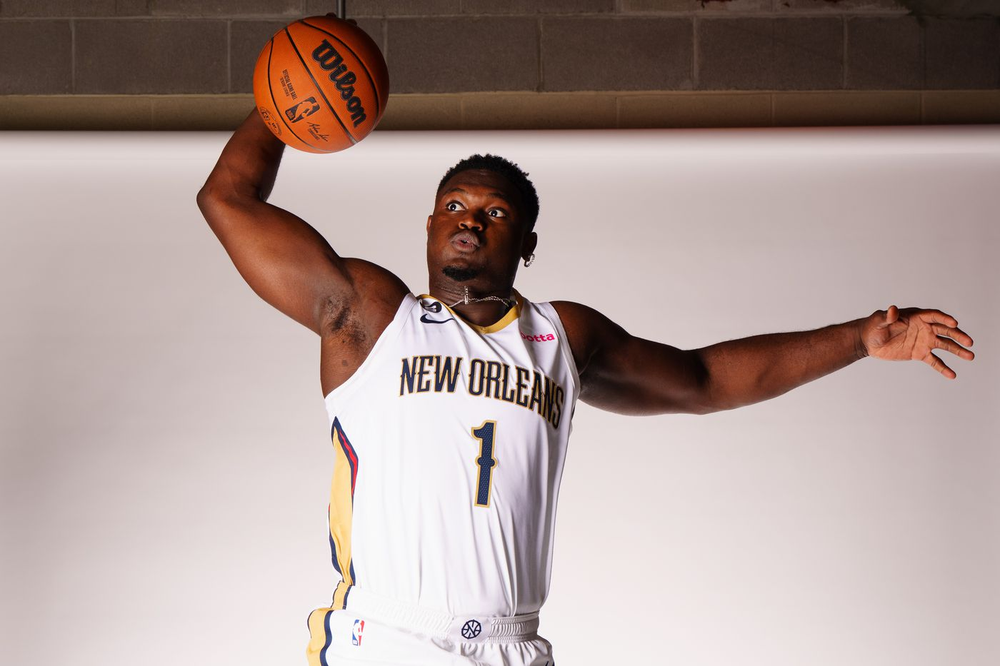

Zion Williamson dominates after returning from a hip injury!
The New Orleans Pelicans pulled away in the second half to defeat the Los Angeles Clippers 112-91 on Sunday, driven by the return of Zion Williamson, who finished with 21 points and 12 rebounds.

Pelicans coach Willie Green was glad to have Williamson back on the floor.
“When he touches the ball, he makes the right play, whether it's to score for himself, finding his teammates or kicking it out, setting screens, continuing to move,” Green said. “He was fantastic.”
“Still a little sore, man,” Williamson said. “I've taken a lot of falls, but I ain't never had a fall like that one. But it was fine enough for me to play. Unless I'm truly injured, I'm going to be playing the game of basketball. That's just how I am.”
“We got some special shooters on this team,” Williamson said. “I'm able to find them and they knock the shots down.”